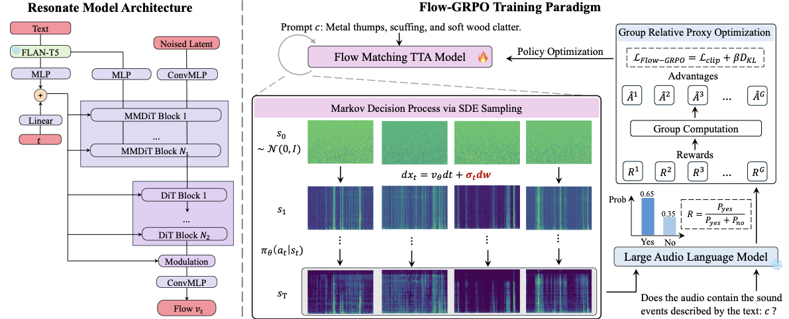
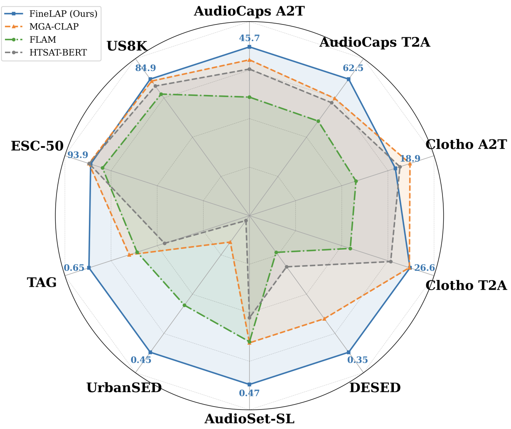
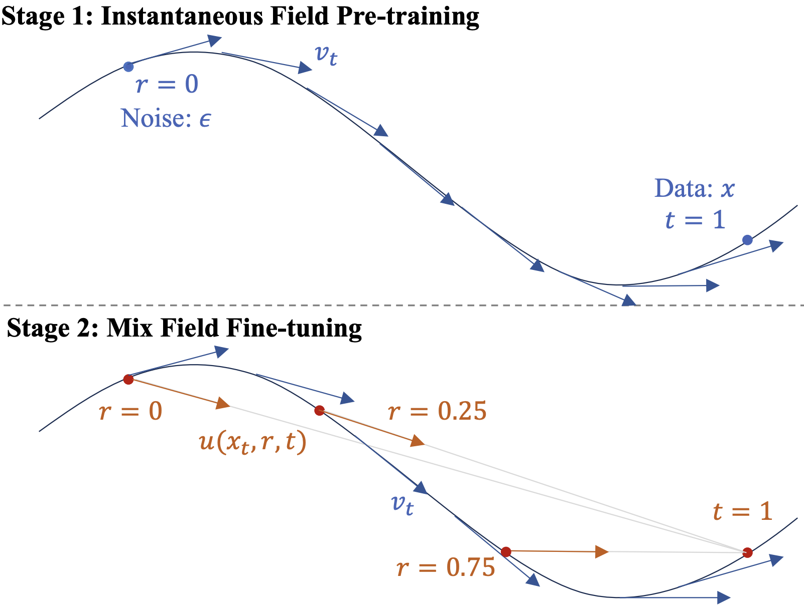
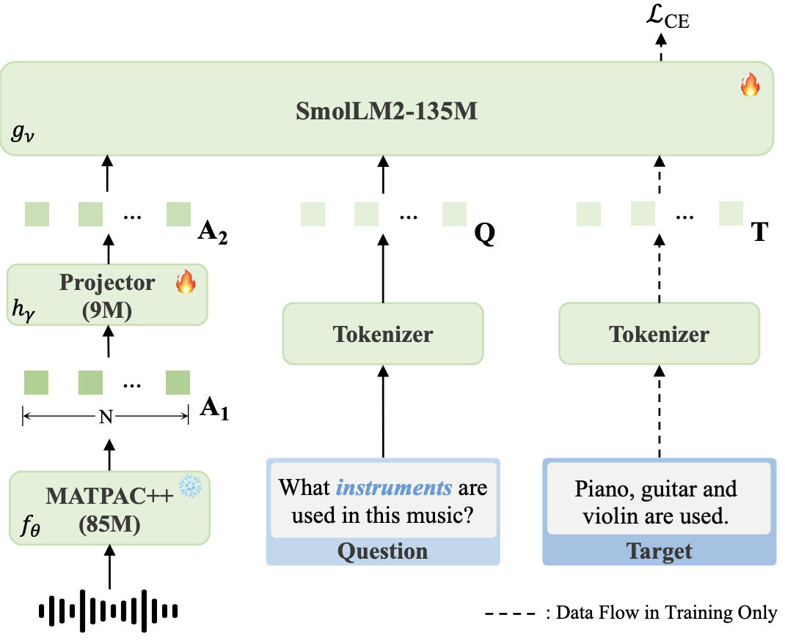
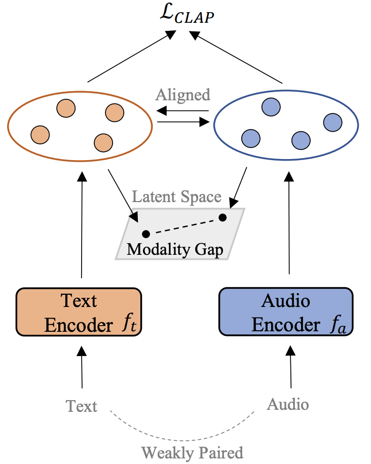

|
Xiquan Li 李希泉 I am a dual-degree master's student at Shanghai Jiao Tong University and Télécom Paris, advised by Prof. Xie Chen at X-LANCE Lab, SJTU and Prof. Slim Essid at ADASP Group, Télécom Paris. Currently, I am interning at ByteDance Seed, working on multimodal understanding and generation. Previously, I received my bachelor's degree from Shanghai Jiao Tong University in 2024. During that summer, I was a research assistant at The Chinese University of Hong Kong (CUHK), working with Prof. Qiuqiang Kong at the DSP Lab, CUHK. I have also interned at Tencent Hunyuan Team. |
{kind=link}
Research Interests
My primary research interest lies in audio understanding and generation. I aim to build intelligent audio systems that can:
I'm currently seeking PhD / industrial opportunities for 2027! |
News
[April 2026] FineLAP, MeanAudio, and SAC have been accepted by ACL 2026.
|
Selected Publications |
|
 |
Resonate: Reinforcing Text-to-Audio Generation via Online Feedback from Large Audio Language Models
Xiquan Li, Junxi Liu, Wenxi Chen, Haina Zhu, Ziyang Ma, Xie Chen arXiv, 2026 paper / code / demo In this paper, we integrate the online RL algorithm GRPO into text-to-audio generation. We incorporate rewards derived from large audio language models and achieve state-of-the-art generation results. |
|
 |
FineLAP: Taming Heterogeneous Supervision for Fine-grained Language-Audio Pretraining
Xiquan Li, Xuenan Xu, Ziyang Ma, Wenxi Chen, Haolin He, Qiuqiang Kong, Xie Chen ACL, 2026 (Main) paper / code / dataset In this paper, we propose a novel training paradigm that leverages heterogeneous data to learn both frame- and clip-level alignment in the CLAP model. Coupled with our proposed architecture and dataset, FineLAP achieves state-of-the-art performance across diverse audio understanding tasks. |
|
 |
MeanAudio: Fast and Faithful Text-to-Audio Generation with Mean Flows
Xiquan Li*, Junxi Liu*, Yuzhe Liang, Zhikang Niu, Wenxi Chen, Xie Chen ACL, 2026 (Main) paper / code / demo In this paper, we successfully integrate MeanFlow into text-to-audio generation. We propose a new architecture along with a novel training curriculum to enhance model performance. Our model, MeanAudio, achieves strong performance in both single- and multi-step audio generation. |
|
 |
TinyMU: A compact Audio-Language Model For Music Understanding
Xiquan Li, Aurian Quelennec, Slim Essid ICASSP, 2026 paper / code / dataset In this paper we propose TinyMU, a compact audio-language model for music understanding and reasoning. TinyMU achieves 82% of SOTA LALM’s performance while being 35× smaller. We also release MusicSkills-3.5M, a large-scale and high-quality music understanding dataset with diverse question formats. |
|
 |
DRCap: Decoding CLAP Latents with Retrieval-Augmented Generation for Zero-shot Audio Captioning
Xiquan Li, Wenxi Chen, Ziyang Ma, Xuenan Xu, Yuzhe Liang, Zhisheng Zheng, Qiuqiang Kong, Xie Chen ICASSP, 2025 (Oral) paper / code In this paper, we propose DRCap, a zero-shot audio captioning system with strong in-domain and cross-domain capabilities. DRCap combines CLAP embeddings, projection-based decoding, and retrieval-augmented generation to enhance performance. |
Education |
|
Shanghai Jiao Tong University, Shanghai, China
M.E. in Information Engineering, Sep. 2024 - Mar. 2027 |
|
|
Telecom Paris, Palaiseau, France
M.E. in Information Engineering, Sep. 2023 - Jun. 2026 |
|
|
Shanghai Jiao Tong University, Shanghai, China
B.E. in Information Engineering, Dual Degree in French, Sep. 2020 - Jun. 2024 |
|
Experience |
|
Seed Speech Group, ByteDance, Shanghai, China
Intern, Nov. 2025 - Present |

|
|
Hunyuan Team, Tencent, Shanghai, China
Intern, Jun. 2025 - Nov. 2025 |
|
|
ADASP Group, Telecom Paris, Palaiseau, France
Research Intern, Sep. 2024 - Jun. 2025 Advisor: Slim Essid |
|
|
DSP Lab, The Chinese University of Hong Kong, Hong Kong, China
Research Assistant, Jun. 2024 - Sep. 2024 Advisor: Qiuqiang Kong |
|
|
X-LANCE Lab, Shanghai Jiao Tong University, Shanghai, China
Research Intern, Jan. 2023 - Present Advisor: Xie Chen |
|
MiscApart from research, I enjoy skiing, playing soccer, and working out. Check out some of the wonderful ski moments here :) |
|
|
|
Updated April 2026 Template adapted from Here |